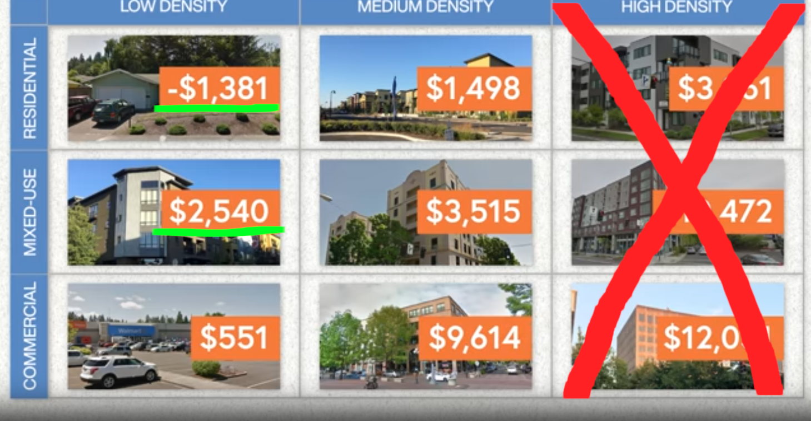
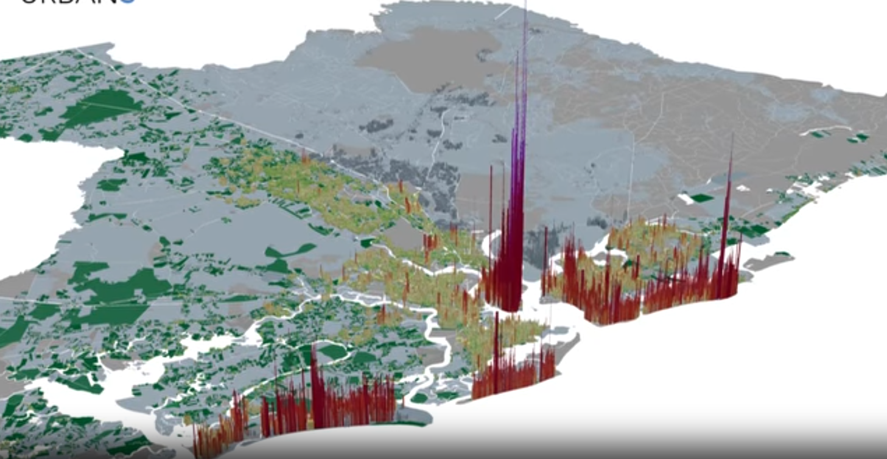

Garden Plaza

Gideon Victor, Mission Viejo taxpayer.
What I am not proposing
- Giant Mixed-Use
- Removing Single-Family Zoning
- Mixed-Use Off Margurite
- This Proposal Specifically Needs to Pass
What I am proposing
- 3-4 Story Mixed-Use on Margurite Only
- Using Excess Revenues from Mixed-Use to Keep Single-Family in Place
- Height Laws limiting the Max Size of Buildings
- Keep Mission Solvent
Mixed-Use Subsidizes Suburbia
Lafayette, LA
Lafayette, LA vs. Mission Viejo, CA
Both mid-sized cites
Revenue per Acre
Return on Investment by Acre
Every property in a city needs services, and the majority of services get more expensive as they spread out.
Downtowns are Wildly Profitable for Cities
Lafayette Found Itself Without Money Because It Kept Investing in Suburban Sprawl
- Businesses pay taxes to build Main Street for people to get to their business.
- Homeowners pay taxes for roads from their home to Main Street. Mixed use on Main Street works because tennants don't need roads to get to main street and businesses share the cost water/sewer/police/fire with tennants above.
Replacement Cost for Infrastructure in Lafayette, LA
Something you would expect to see turnover in 1 generation.
Average taxes to replace infrastructure would have to go from $1,500/year to $9,200/year per taxpayer not including services.
Again, Mixed-Use Subsidizes Suburbia
Eugene, OR.
Every property in a city needs services, and the majority of services get more expensive as they spread out.
Return on Investment Per Acre
Eugene, OR.
Downtown clearly visible.
Mixed use does not need to be huge
Eugene, OR.
Revenue by density and use
Eugene, OR.
Mixed use keeps cities SOLVENT. I propose we allow the mixed use zoning as long as we cap the height to 4 stories.
Instead of "Stop the Monster" we should be shouting "Keep Mission Strong (Solvent)"
Revenue per Acre
South Bend, IN
Revenue per Acre
Charlestown, SC
Revenue per Acre
ST. Paul, MN
Revenue per Acre
Auckland, New Zealand
Traditional Mixed-Use Walkable Neighborhoods dramatically outperform car-centric Suburbia every single time.
What a finacially solvent city looks like
Guelph, Ontario in Canada opened up designs for walkable mixed use and revenues grew; this allows long-term suburban residents to keep their charm and low taxes while the city stays solvent.